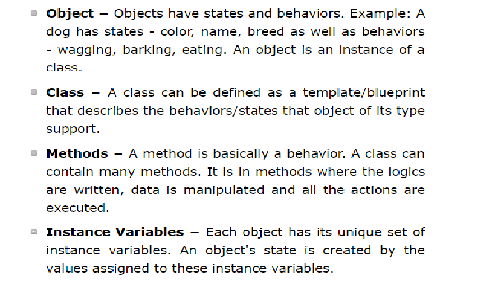
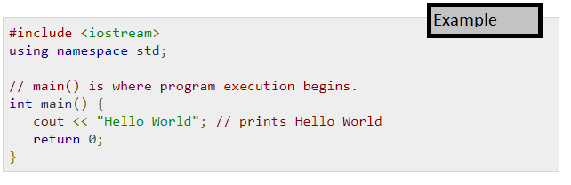
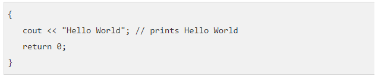
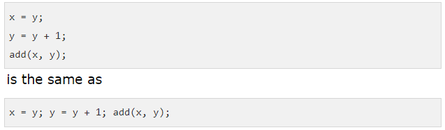
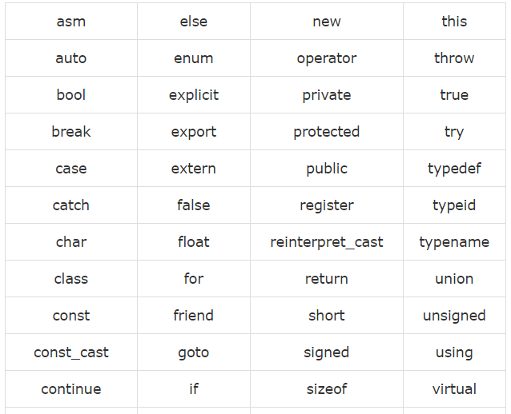
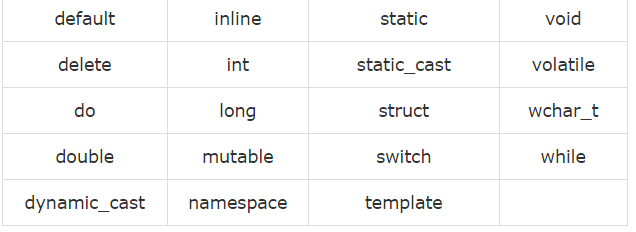
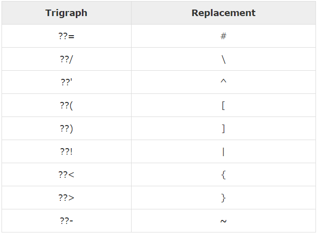
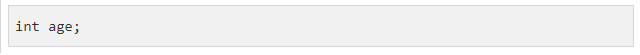
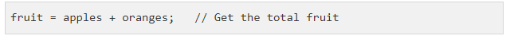

BasicSyntax In CPP
When we consider a C++ program, it can be defined as a collection of objects that communicate via invoking each other's methods. Let us now briefly look into what a class, object, methods, and instant variables mean.
C++ Program Structure
Let us look at a simple code that would print the words Hello World.
Let us look at the various parts of the above program -
- The C++ language defines several headers, which contain information that is either necessary or useful to your program. For this program, the header
is needed. - The line using namespace std; tells the compiler to use the std namespace. Namespaces are a relatively recent addition to C++.
- The next line '// main() is where program execution begins.' is a single-line comment available in C++. Single-line comments begin with // and stop at the end of the line.
- The line int main() is the main function where program execution begins.
- The next line cout << "Hello World"; causes the message "Hello World" to be displayed on the screen.
- The next line return 0; terminates main( )function and causes it to return the value 0 to the calling process.
Compile and Execute C++ Program
- Open a text editor and add the code as above.
- Save the file as: hello.cpp
- Open a command prompt and go to the directory where you saved the file.
- Type 'g++ hello.cpp' and press enter to compile your code. If there are no errors in your code the command prompt will take you to the next line and would generate a.out executable file.
- Now, type 'a.out' to run your program.
- You will be able to see ' Hello World ' printed on the window.
Let's look at how to save the file, compile and run the program. Please follow the steps given below -
Make sure that g++ is in your path and that you are running it in the directory containing file hello.cpp.
Semicolons and Blocks in C++
In C++, the semicolon is a statement terminator. That is, each individual statement must be ended with a semicolon. It indicates the end of one logical entity.
For example, following are three different statements -
A block is a set of logically connected statements that are surrounded by opening and closing braces. For example -
C++ does not recognize the end of the line as a terminator. For this reason, it does not matter where you put a statement in a line. For example -
C++ Identifiers
A C++ identifier is a name used to identify a variable, function, class, module, or any other user-defined item. An identifier starts with a letter A to Z or a to z or an underscore (_) followed by zero or more letters, underscores, and digits (0 to 9).
C++ does not allow punctuation characters such as @, $, and % within identifiers. C++ is a case-sensitive programming language. Thus, Manpower and manpower are two different identifiers in C++.
Here are some examples of acceptable identifiers -
C++ Keywords
The following list shows the reserved words in C++. These reserved words may not be used as constant or variable or any other identifier names.

Trigraphs
A few characters have an alternative representation, called a trigraph sequence. A trigraph is a three-character sequence that represents a single character and the sequence always starts with two question marks.
Trigraphs are expanded anywhere they appear, including within string literals and character literals, in comments, and in preprocessor directives.
Following are most frequently used trigraph sequences -

All the compilers do not support trigraphs and they are not advised to be used because of their confusing nature.
Whitespace in C++
A line containing only whitespace, possibly with a comment, is known as a blank line, and C++ compiler totally ignores it.
Whitespace is the term used in C++ to describe blanks, tabs, newline characters and comments. Whitespace separates one part of a statement from another and enables the compiler to identify where one element in a statement, such as int, ends and the next element begins.
Statement 1
In the above statement there must be at least one whitespace character (usually a space) between int and age for the compiler to be able to distinguish them.

Statement 2
In the above statement 2, no whitespace characters are necessary between fruit and =, or between = and apples, although you are free to include some if you wish for readability purpose.

« Previous Next »